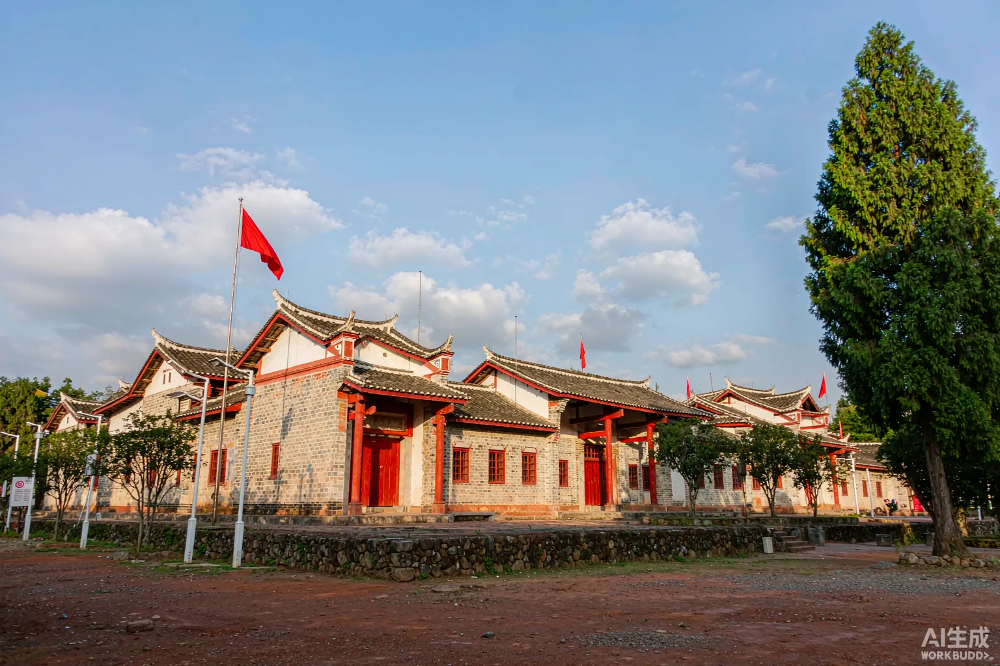
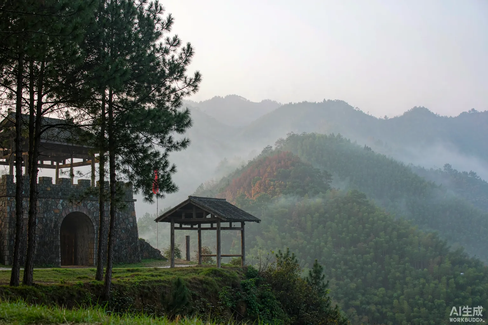
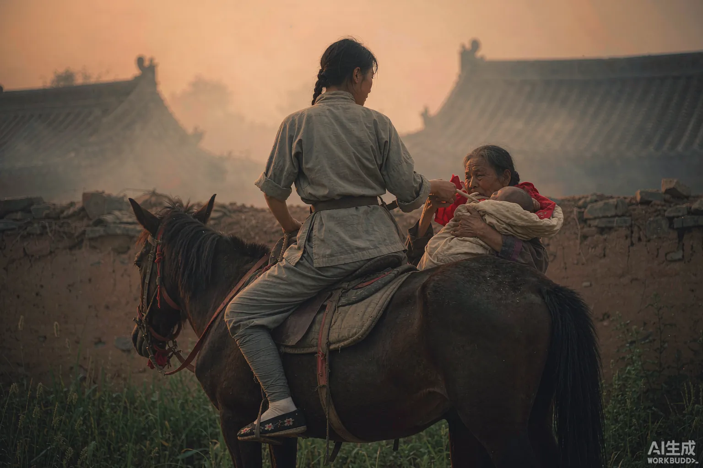
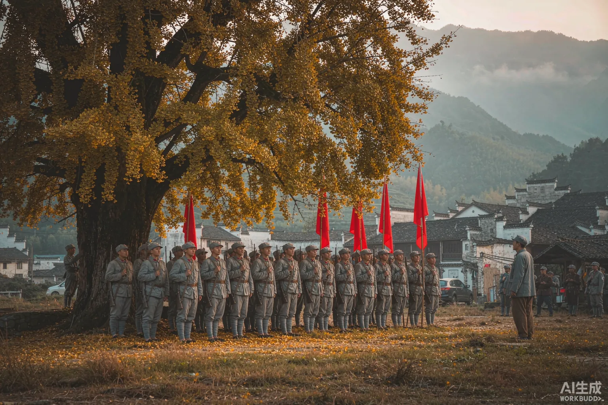
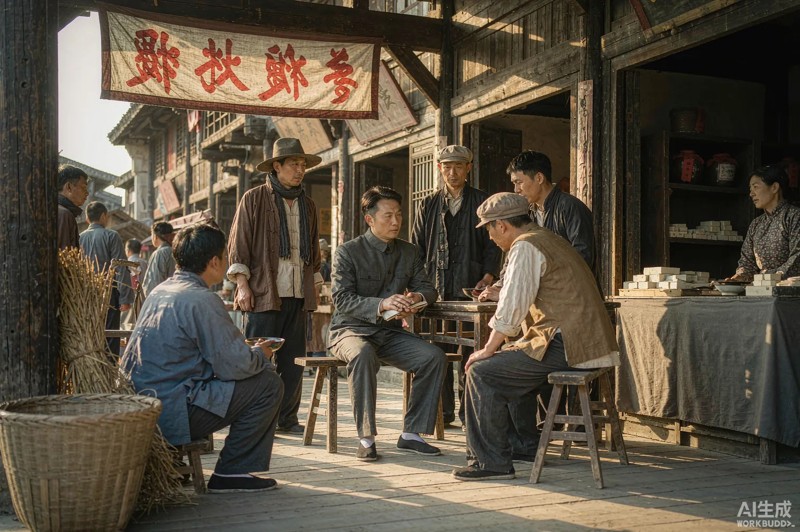
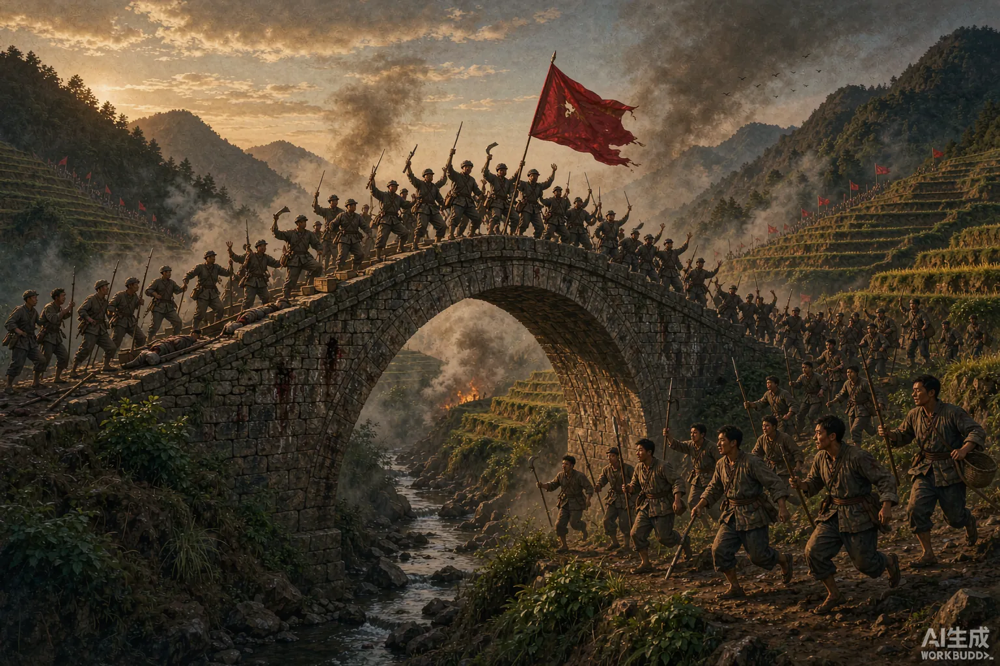

每一个故事，都发生在江西的红土地上。它们不是遥远的传说， 而是一群和我们一样的人，在最黑暗的年代做出的选择。 点开任何一个，只需要五分钟——但你会记住一辈子。
战士们偷偷藏起了军长的扁担——他们只是不想让 42 岁的他再走那五十公里山路。可第二天，挑粮的队伍里又多了一根新扁担，上面写着五个字。
一根写上名字的扁担，为何让全军肃然起敬？
读这个故事 →敌人侦察机天天在头顶盘旋，却始终没有发现：8.6 万人的大军，正从一座临时浮桥上悄然渡河。因为全县 30 万人，没有走漏一个字。
一位老人捐出了家中唯一的寿材——"红军是为穷人打天下的"。
读这个故事 →
"三天不下雨，无水洗手帕。"沙洲坝人祖祖辈辈喝塘水，因为风水先生说挖井会坏了龙脉。有个人不信，他带头来挖——井旁的石碑至今立着。
一口井，如何让一个村庄记了九十年？
读这个故事 →
17 位青年参军前，每人种下一棵松树："等松树长大了，我们就回来。"松树如今已亭亭如盖，可最年轻的那位少年，牺牲时只有 13 岁。
一个 43 户的小村庄，为何再也等不回 17 个人？
读这个故事 →大儿子、二儿子战死后，农民杨荣显把剩下的六个儿子叫到跟前。他说了一句话，六个儿子便全部上了战场。这样的人家，当年的瑞金不止一户。
后来这个故事被拍成电影《八子》——每次演到父亲送别，台下都是哭声。
读这个故事 →
妻子把家里仅有的皮箩修补结实，装上丈夫的换洗衣物和一双草鞋："皮箩在，人就要回来。"皮箩回来了——人没有。
如今它陈列在纪念馆里，箩底还留着湘江渡口的泥渍。
读这个故事 →"自带干粮去办公，日着草鞋干革命，夜走山路访贫农。"一首山歌，唱的是当年干部的真实日常——下乡开会自己背米袋，从不吃群众一口饭。
23 万人的兴国县，8 万人参军参战——凭什么？
读这个故事 →三个女红军借宿在徐解秀家，四个人合盖一条行军被。临走时她们把被子留下，徐解秀说什么也不要。于是，有人拿出了剪刀。
"什么是共产党？就是自己有一条被子，也要剪下半条给老百姓的人。"
读这个故事 →女儿三岁了，从未见过父亲。他在信里写："革命不成功，立誓不回家。"写下这封信的第二年，他牺牲了，年仅 25 岁。
一封没能等来团圆的家书，为何让朱德挥泪长叹？
读这个故事 →
弹尽粮绝，腹部中弹，被俘。敌人抬着他去邀功——行至道县，他趁敌不备，从伤口处掏出肠子，用力绞断。那一年，他 29 岁。
这支从于都河畔走出来的"绝命后卫师"，近 6000 人几乎全部牺牲。
读这个故事 →被俘那天，士兵从他身上只搜出一块怀表和一支钢笔，连一个铜板都没有。这位经手数百万款项的"大官"，给世人留下的遗产，是狱中写下的十四万字。
《可爱的中国》《清贫》——都写于敌人的枪口之下。
读这个故事 →
孩子出生四十多天，丈夫牺牲。她把孩子托给婆婆，翻身上马随部队出发。女儿终生没有等到母亲——她牺牲在敌人的监狱里，年仅 25 岁。
兴国将军馆里那尊"马前托孤"雕塑，原型就是她。
读这个故事 →
起义部队从五千人打到不足一千，人心涣散。就在这个小山村里，"支部建在连上""官兵平等"两项原则定下——一支新型人民军队在这里涅槃重生。
快散掉的队伍，如何在枫树坪下凤凰涅槃？
读这个故事 →
为了写这份报告，他在县城住了二十多天，开了十多场调查会，连全县有多少家豆腐店都数清楚了。"没有调查，没有发言权"——名言就出自这里。
八万字报告，藏着一部赣南小城的百科全书。
读这个故事 →
"不费红军三分力，打败江西两只羊。"这场井冈山时期最辉煌的大捷之后，根据地进入全盛——当年红军鏖战的那座石桥，后来被印在了人民币上。
翻开第三套一元纸币，桥就在你手心里。
读这个故事 →国家银行行长的全部家当：一张桌子、两只算盘、五个人。一年后，这个"世界上最小的国家银行"发行纸币、卖出 60 万元公债，撑起了红色政权的财政。
长征路上，整座银行被拆散，用 160 多副担子挑着走。
读这个故事 →